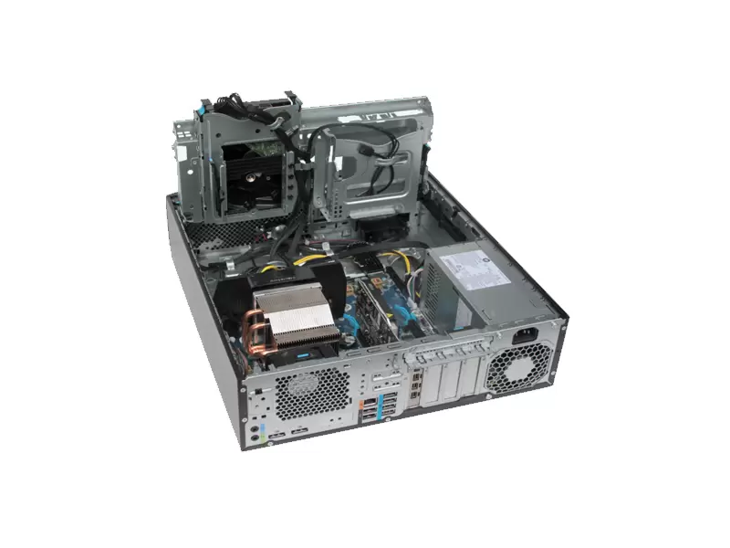
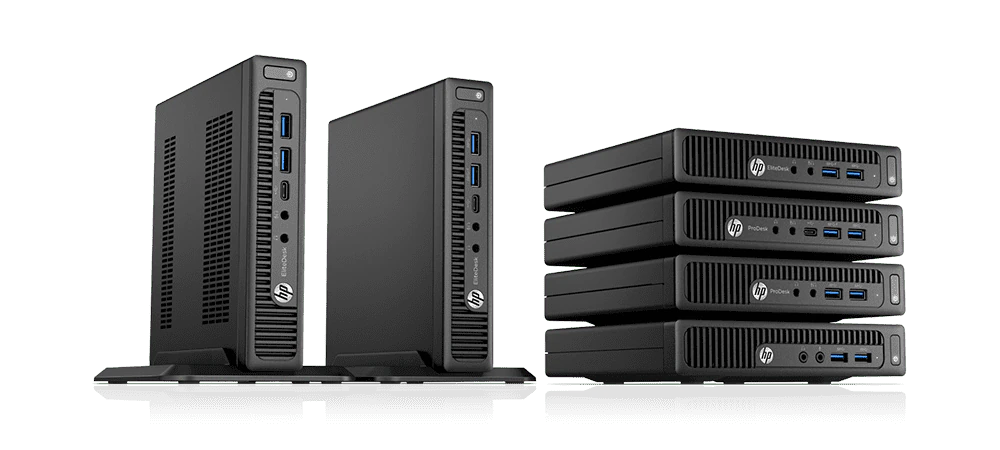

Vandaag wil ik het gaan hebben over computers qua afmetingen met plaatjes.Waar ik nu mee werk is hp compaq 8000 elite sff.
Wel een refurbished d.w.z. zo goed als nieuw.Je moet hem natuurlijk wel updaten misschien ook het bios maar dat is vaak riskant.Ik heb deze al 5 jaar een refurbished.
